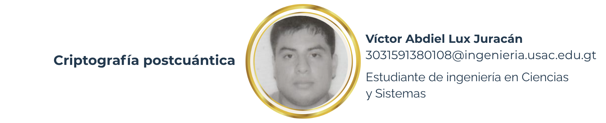
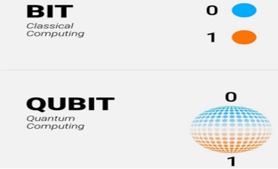

8 Criptografía postcuántica

8.1 Resumen
La criptografía postcuántica surge ante la amenaza que representan las computadoras cuánticas a los métodos de criptografía que se utilizan actualmente. El fenómeno Store Now, Decrypt Later, consiste en almacenar información personal como contraseñas, información bancaria, datos más sensibles como investigación industrial y farmacológica o inteligencia gubernamental, todo esto con la finalidad de poder desencriptarlas y utilizarlas a futuro.
Esta información es importante protegerla hoy, ya que hay datos que aún tendrán valor en una década o más. La administración de seguridad nacional de los Estados Unidos señala en el documento “U.S. National Security Agency Issues Update on Quantum Computing Threat” lo siguiente: “un computador cuántico criptanalíticamente relevante (CRQC) sería capaz de socavar los algoritmos de clave pública ampliamente utilizados”.
Este riesgo ya es ampliamente conocido, por lo cual en este artículo se abordan los fundamentos de la computación cuántica, la evolución de los estándares de criptografía resistentes a la era cuántica y las iniciativas legales y tecnológicas que buscan mitigar el riesgo que esto representa.
8.2 Abstract
Post-quantum cryptography emerges in the face of the threat that quantum computers pose to currently used cryptographic methods. The “Store Now, Decrypt Later” phenomenon consists of storing sensitive information such as passwords, banking information, more sensitive data like industrial and pharmacological research or government intelligence, all with the purpose of being able to decrypt and use it in the future. This information is important to protect today, since there is data that will still have value in a decade or more. The U.S. National Security Agency states the following in the document “U.S. National Security Agency Issues Update on Quantum Computing Threat”: “a cryptanalytically relevant quantum computer (CRQC) would be capable of undermining widely used public-key algorithms.”
This risk is already widely known, which is why this article addresses the fundamentals of quantum computing, the evolution of post-quantum cryptography standards, and the legal and technological initiatives that seek to mitigate the risk it represents.
8.3 Palabras clave
Criptografía postcuántica, computación cuántica, Store Now, Decrypt Later, cifrado asimétrico
8.4 Introducción
El fenómeno guarda ahora y desencripta después (Store Now, Decrypt Later) consiste en la práctica de almacenar información sensible que, aunque esté cifrada, podría ser descifrada en el futuro. Con las computadoras modernas no es posible tener acceso a estos datos, incluso si se utilizaran supercomputadoras, que son las máquinas con mayor capacidad que existen actualmente. Con los procesos actuales el proceso de descifrar puede tomar miles de millones de años, dependiendo de la longitud y complejidad del algoritmo utilizado.
La seguridad actual consiste en sistemas de criptografía asimétrica basados en problemas matemáticos complejos, como la factorización de números primos o el logaritmo discreto. Sin embargo, el avance de la computación cuántica amenaza con descifrar en cuestión de minutos u horas; esto es debido a la capacidad de hacer estos un gran número de cálculos al mismo tiempo.
Una computadora moderna usa bits, lo cual hace que la información sea procesada de manera secuencial, ya que un bit solo tiene dos estados y solo puede existir en un estado a la vez. Las computadoras cuánticas usan qubits, los cuales están en múltiples estados a la vez; esta característica hace que tenga un enorme poder, permitiendo tener una capacidad superior para el procesamiento de datos capaz de resolver estos problemas en un tiempo mucho menor. Por ello, el fenómeno Store Now, Decrypt Later se ha vuelto crítico el desarrollar nuevos métodos de criptografía postcuantía que sean resistentes a los avances de las computadoras cuánticas.
8.5 Artículo
La criptografía nació de la necesidad de enviar mensajes secretos sin que el enemigo pudiera interceptarlo y descifrar estos mensajes. Desde la era antigua el imperio Romano utilizaba un tipo de cifrado conocido actualmente como “cifrado de César” para enviar órdenes a sus generales. Se encriptaban los mensajes usando esta técnica y se enviaban a través de mensajeros; además se enviaba un mensaje adicional con la clave de descifrado oculto y por una ruta diferente. De esta forma si un mensajero era capturado, no se tendría la información completa para descifrar el mensaje.
Durante la Segunda Guerra Mundial la Alemania nazi, se utilizó una máquina llamada enigma para encriptar todas sus comunicaciones; la particularidad de esta máquina es que podía cifrar y descifrar los mensajes utilizando solamente esta. Los mensajes parecían indescifrables, ya que el sistema cambiaba algo diariamente. Hasta que Alan Turing utilizó las matemáticas y una máquina electromagnética que él mismo inventó para acelerar el proceso de descifrar la configuración de la máquina Enigma.
Con la llegada del internet, esta necesidad de encriptar y proteger la comunicación digital se hizo necesaria. Al principio, se utilizaron técnicas de criptografía simétrica, donde tanto el emisor como el receptor utilizaban una misma clave secreta para encriptar y desencriptar los mensajes. Este método era poco práctico, ya que se tenían que intercambiar claves de manera presencial, debido a que enviarlas a través de internet era inseguro y si se filtraba esta, comprometía en gran manera las comunicaciones; esto sentó las bases para el siguiente avance.
En los años noventa, los científicos Ron Rivest, Adi Shamir y Leonard Adleman, inventaron el algoritmo RSA, que es la primera implementación de la criptografía de clave pública o asimétrica. La seguridad de esta consiste en usar una clave pública y una privada; el mensaje solo puede ser descifrado con la parte privada, así que incluso si la pública es interceptada, la dificultad consiste en descifrar la clave privada a partir de la clave pública mediante métodos de factorización; esto es sumamente difícil para las computadoras clásicas. Actualmente se sigue utilizando este tipo de cifrado, ya que hasta ahora ha sido la más segura, pero esto está cambiando, no por una amenaza actual, sino por una tecnología que está creciendo y es el futuro de la computación: la computación cuántica.

Figura 8.1: Uso de bits y qubits en las computadoras clásica y cuántica
Para la computación clásica no es posible descifrar los algoritmos actuales; el proceso de descifrar puede tomar miles de millones de años, dependiendo de la longitud y complejidad del algoritmo utilizado. Pero para la computación cuántica es posible, ya que usan qubits, los cuales están en múltiples estados a la vez y esta característica hace que tengan un enorme poder, permitiendo tener una capacidad superior para el procesamiento de datos, capaz de resolver estos problemas en un tiempo mucho menor.
En la actualidad se está guardando una gran cantidad de datos tales como contraseñas, información bancaria, datos más sensibles como investigación industrial y farmacológica o inteligencia gubernamental, con el fin de poder desencriptarlo en un futuro.
A este fenómeno se le llama Store Now, Decrypt Later. Esta información es importante protegerla hoy, ya que hay datos que aún tendrán valor en una década o más; la administración de seguridad nacional de los Estados Unidos dice en el documento “U.S. National Security Agency Issues Update on Quantum Computing Threat lo siguiente: “un computador cuántico criptanalíticamente relevante (CRQC) sería capaz de socavar los algoritmos de clave pública ampliamente utilizados”.
Actualmente hay iniciativas globales orientadas hacia la era cuántica para mitigar los riesgos. Diversas regiones y países han publicado iniciativas y estas son las más conocidas:
Quantum Computing Cybersecurity Preparedness Act (EE. UU.): exige a agencias federales migrar hacia algoritmos resistentes a la computación cuántica.
- EuroQCI (European Quantum Communication Infrastructure): busca desplegar una red de comunicaciones cuánticas seguras a nivel europeo.
Ley de Criptografía de la República Popular China: regula y fomenta el desarrollo de tecnologías criptográficas, incluyendo las resistentes al cómputo cuántico.
Planning for Post-Quantum Cryptography (NIST, EE. UU.): iniciativa para estandarizar algoritmos postcuánticos de uso global.
Todas estas coinciden en dos puntos centrales: la urgencia de migrar a soluciones resistentes y la cooperación internacional para garantizar la seguridad digital en la próxima década.
La criptografía postcuántica busca diseñar algoritmos que mantengan su seguridad, incluso frente a un computador cuántico. Estos se basan en problemas matemáticos distintos como redes euclidianas, códigos de corrección de errores o funciones hash resistentes. Un ejemplo intuitivo es la representación de datos como vectores en espacios de alta dimensión, generados de manera aleatoria, lo que dificulta enormemente su resolución aún para un sistema cuántico.
La institución que lidera este proceso de estandarización es la NIST (Instituto Nacional de Estándares y Tecnología de Estados Unidos) su finalidad es la estandarización de algoritmos frente a ataques de computadoras cuánticas; se espera la adopción global de estas en preparación para los próximos años.
Figura 8.2: Criptografía postcuántica
8.6 Conclusiones
La llegada de la computación cuántica es una amenaza latente. La criptografía actual, basada en la dificultad computacional de ciertos problemas matemáticos, será insuficiente frente al poder de cómputo cuántico. Las iniciativas legislativas y tecnológicas alrededor del mundo señalan que es necesario a migrar a algoritmos resistentes cuanto antes. El desafío es mejorar las prácticas de los usuarios, fomentar la educación en ciberseguridad, apostar por la cooperación internacional y prepararse hoy para asegurar la información.
8.7 Referencias
[1] IBM Quantum (2025). IBM Quantum Experience. https://quantum-computing.ibm.com
[2] National Institute of Standards and Technology (NIST) (2025). Post-Quantum Cryptography Standardization.
[3] Santaolalla, J. (2024). Cómo el cómputo cuántico rompe el internet, desde ahora. [Vídeo]. YouTube. https://www.youtube.com/watch?v=xymGpIeNc88.